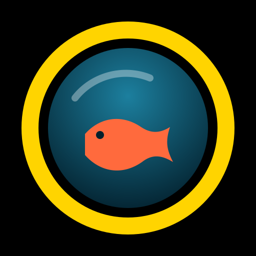

DÉMO — pas de caméra

Appareil photo pour l'eau. Corrige le bleu, déclenche sans toucher l'écran.
Pour une app plein écran : Partager → Sur l'écran d'accueil.
Sous l'eau l'écran tactile ne répond plus. Choisis un geste, il déclenche le mode en cours.
Une télécommande Bluetooth (touche Entrée) déclenche aussi, comme la barre d'espace sur un clavier.
Aucune photo pour l'instant.
Les photos restent dans l'app tant que tu ne les exportes pas. Sur iPhone, « Tout exporter » puis « Enregistrer les images » les envoie dans Photos.